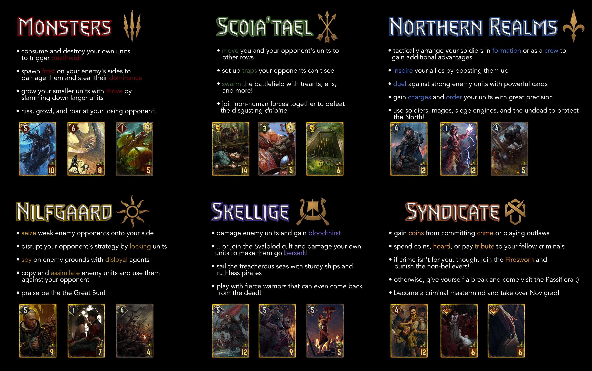

Gwent in The Witcher 3
Gwent is the card game Geralt plays in taverns with quest givers across The Witcher 3: Wild Hunt. Two players sit and build decks tied to one of the five factions, place unit and special cards into melee, ranged, and siege rows, and compete for the higher total strength over up to three rounds. The first player to win two rounds wins the match.

How a match works
Each round you may play one card per turn or pass. When both players pass, the round ends and the higher combined strength wins the round. Winning a round costs nothing from your hand for the next round except what you already played; the tutorial at White Orchard teaches redraw and basic row placement. Weather cards affect a whole row on both sides; commanders’ horns and decoys add combos once you collect more cards from merchants and quests.
Deck factions and card ideas
The nested list below walks through each major deck faction—its broad playstyle and a few signature mechanics you will recognise from The Witcher 3, plus Syndicate as it appears in the standalone Gwent card game.
-
Northern Realms
-
Strong in balanced rows and resilience
- Spy cards — play on the opponent’s side, draw two cards
- Tight Bond — duplicate names boost each other in one row
- Medics — revive a unit from the discard pile
-
Strong in balanced rows and resilience
-
Nilfgaard
-
Emphasis on control and hand manipulation
- Spies — same draw trick as the North, themed for Empire
- Reveals and seize effects in later collected cards
- High siege and disciplined melee lines
-
Emphasis on control and hand manipulation
-
Scoia'tael
-
Mobility and ambush flavour
- Agile units — choice of row when played
- Medic and muster pairs in themed sets
- Weather synergy in some builds
-
Mobility and ambush flavour
-
Monsters
-
Raw strength and muster chains
- Muster — playing one card pulls matching ones from deck
- Close-combat brutes and fear-themed specials
- Leader cards that bind the theme together
-
Raw strength and muster chains
-
Skellige
-
Discards and round-two surges
- Cards that benefit from units in the graveyard
- High risk, high reward round three swings
- War longships and clan warriors across rows
-
Discards and round-two surges
-
Syndicate
-
Crime families, coin economy, and control
- Profit and fee-style effects that reward setup and timing
- Bodies and intimidation—thugs and enforcers across rows
- Leader abilities tied to syndicate bosses and turf
-
Crime families, coin economy, and control
Special and leader cards
Beyond numbered units, these card types appear in most collections and decide many games once you understand timing.
- Weather — Biting Frost, Impenetrable Fog, Skellige Storm (and variants) set a row’s strength to one for affected cards until cleared or replaced.
- Decoy — return a non-hero unit on your side to hand and play the Decoy in its place; core for reusing spies and medics.
- Commander’s Horn — doubles strength of all units in a row on your side (excluding heroes unless card text says otherwise).
- Leader cards — one per deck, single use per match; effects range from drawing cards to reviving discards or crushing a row.
Collecting cards
You win unique cards from specific players, buy basics from innkeepers, and find rares through quests. Building a full collection is its own side journey across Velen, Novigrad, Skellige, and Toussaint. It's worth it if you want every edge before the tournament-style matches in the city hubs.